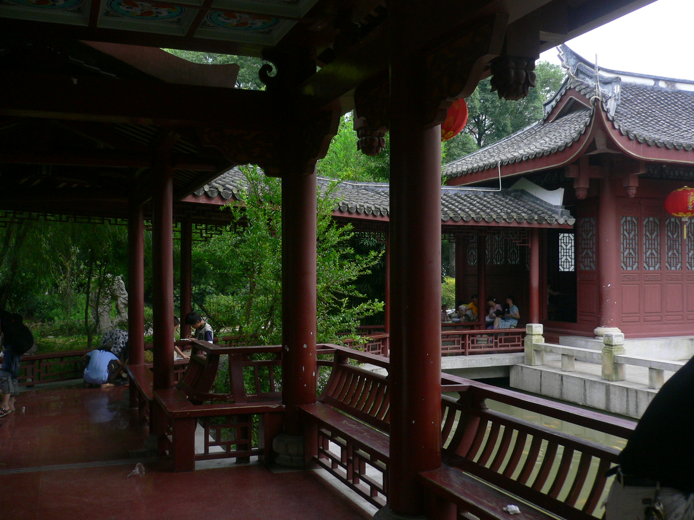
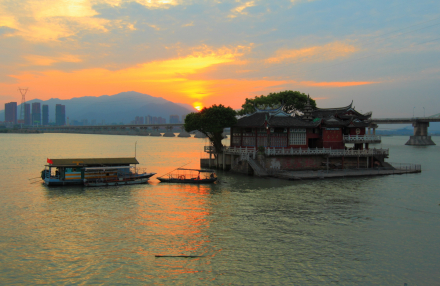
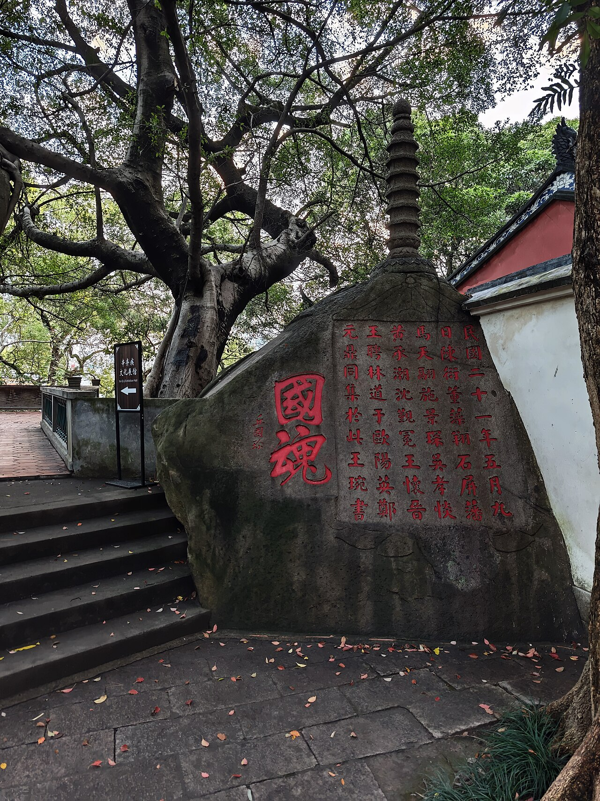
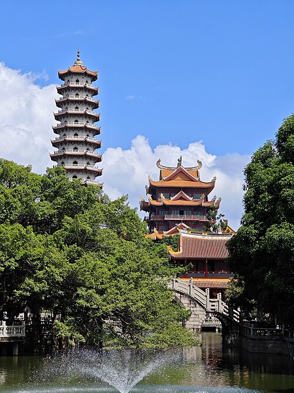
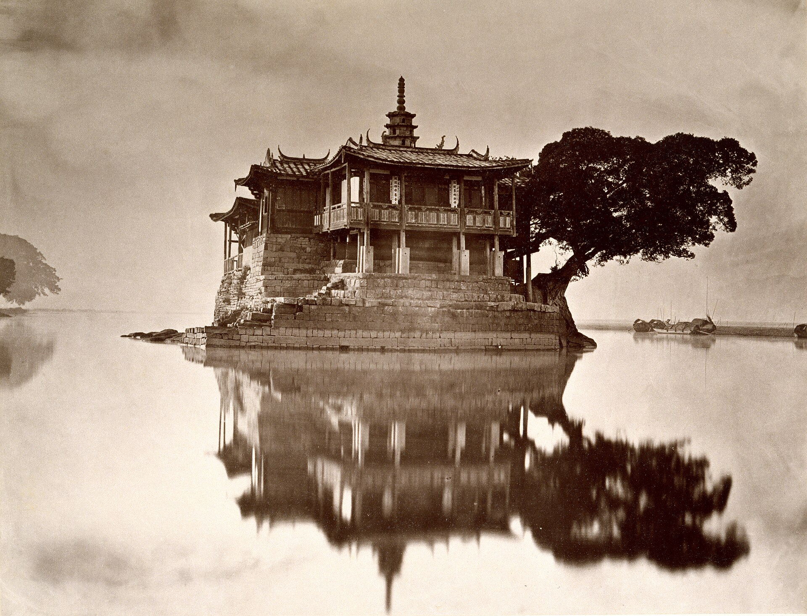
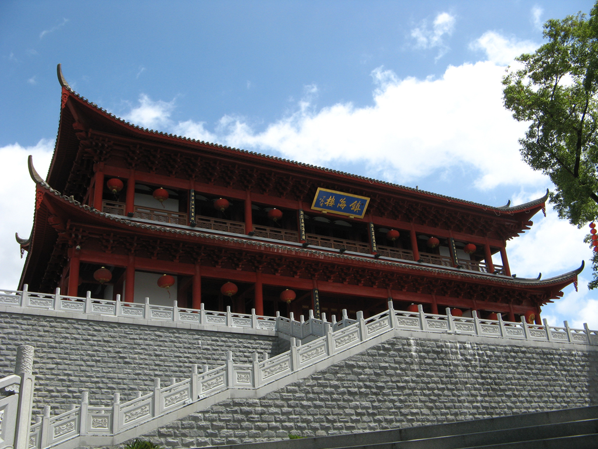
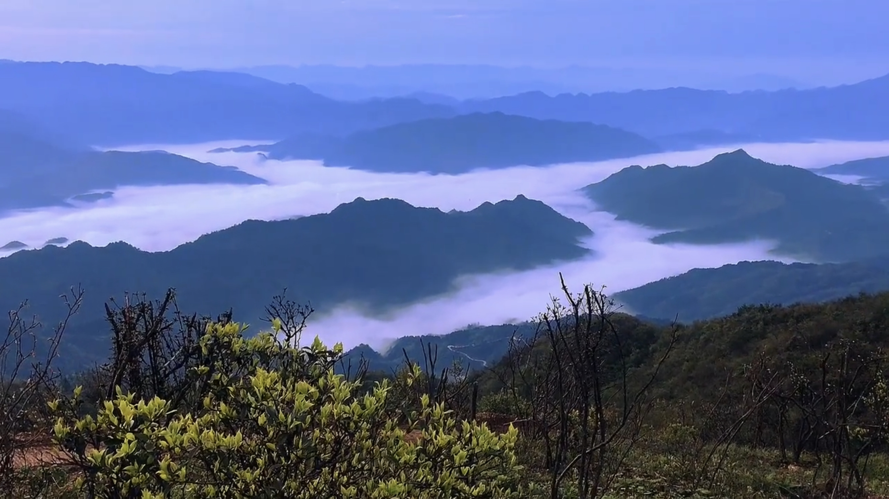
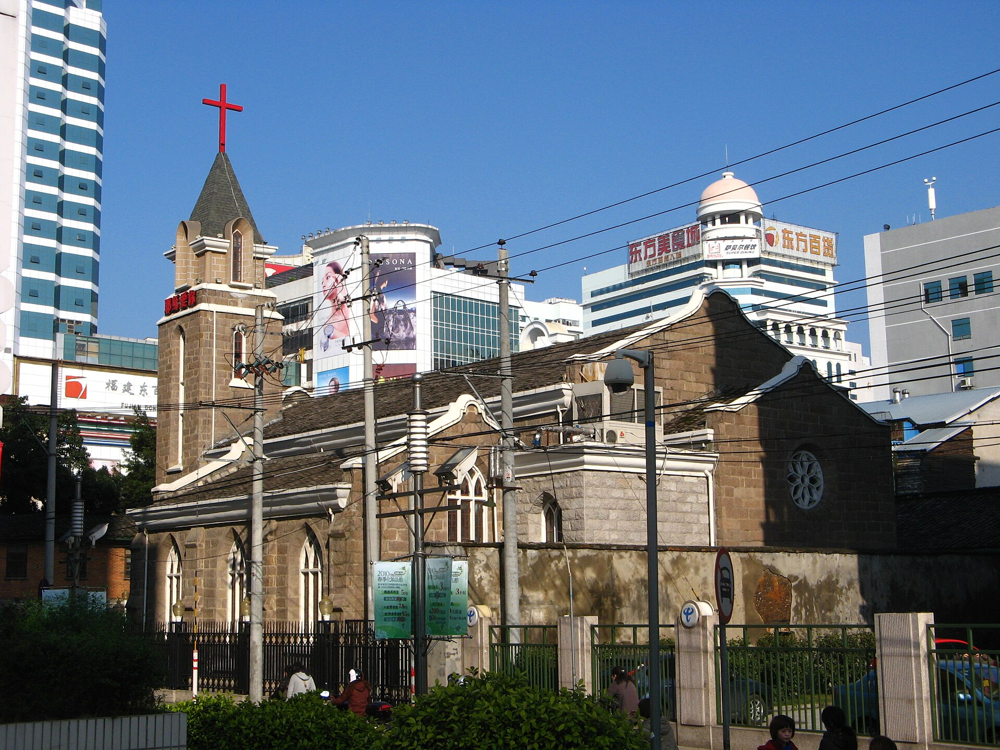
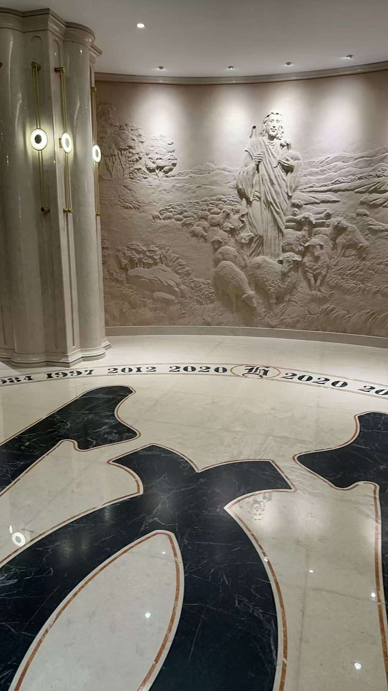

Recorded Culture and History
A city where tradition meets innovation.

Fuzhou West Lake, located in the northwest of Fuzhou city, was excavated in 282 AD under the supervision of Mayor Yan Gao, primarily for farmland irrigation. It is named West Lake because it is west of Fuzhou city.

Huangtang is located in the northern part of Nantai Island, Cangshan District, Fuzhou City, China. Historically, Huangtang has a rich cultural atmosphere, especially as it was the birthplace of scholars such as Weng Zhengchun.

Yu Mountain is a hill located in Gulou District, Fuzhou City, China. It is said to have been named after a branch of the ancient Yu Yue clan who lived here. Yu Mountain has many historical sites, such as cliff inscriptions.

Xichan Temple is located at the foot of Yishan Mountain in Gulou District, Fuzhou City. The lychee poetry gathering at Xichan Temple is also very famous. Xichan Temple has many branch temples in Fuzhou and Southeast Asia.

Jinshan Temple, located on the Wulong River in Fuzhou, Fujian Province, is the only temple in Fuzhou built on water. Originally a stone hill on the Wulong River, it was named "Little Jinshan" because it resembled Jinshan Mountain in Zhenjiang, south of the Yangtze River. The temple is small, exquisite, and unique.

Zhenhai Tower, located atop Pingshan Mountain in Gulou District, Fuzhou, China, is the northernmost landmark of the city. In the past, ships entering the city at night used it as a marker. To its west are seven stone vats arranged in the shape of the Big Dipper, symbolizing peace and good fortune for Fuzhou.

Xuefeng Mountain is located in Dahu Township, Minhou County, Fuzhou City. It was renamed because "there is still snow on the mountaintop even in the summer moon".

Huaxiang Christian Church is a church in Fuzhou, China, founded in 1864 by the Methodist Episcopal Church. It is located in Huaxiang, near Dongjiekou in Gulou District, Fuzhou.

Fuhua Church is a large church located in Fuqing City, Fuzhou City, and is currently the largest church in Fujian Province. In 1863, Robert Samuel Maclay, a Methodist missionary in Fuzhou, rented a house on Houpu Street as a preaching place. The church was built in 1884 and named Fuhua Church.